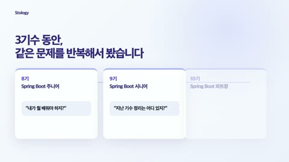
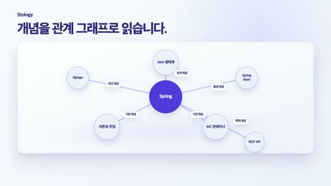
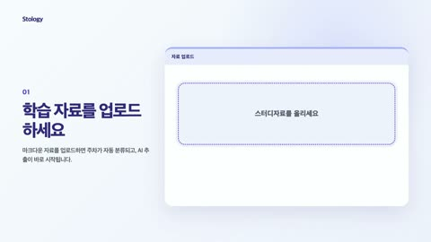
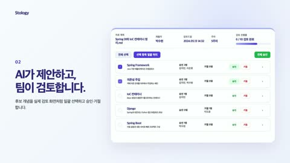
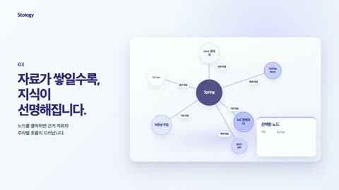
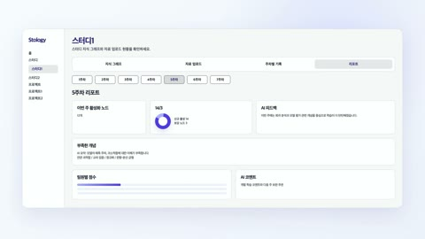
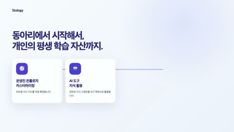

Stology 현재 렌더 영상 화면 맵
기준 파일: renders/video_2026-05-16_13-28-34.mp4 · 각 장면 중간 프레임 기준
S01오프닝 훅: 자료/앱/파일이 쌓이는 문제0–4s · 중간 2.0s
S02문제 제기: 질문과 맥락 단절4–8s · 중간 6.0s

S03세대별 기록/자료가 흩어지는 흐름8–13s · 중간 10.5s
S04전환 메시지: 기록 → 연결13–17s · 중간 15.0s
S05Stology 브랜드/Study + Ontology 소개17–22s · 중간 19.5s

S06Spring 관계 그래프22–27s · 중간 24.5s

S07 / 기능 01스터디자료 업로드·주차 자동 분류27–32s · 중간 29.5s

S08 / 기능 02AI 후보 제안·팀 승인/거절 검토32–38s · 중간 35.0s

S09 / 기능 03Spring 그래프·개념 설명 패널38–44s · 중간 41.0s

S10 / 기능 04스터디 리포트·커버리지/도넛 차트44–49s · 중간 46.5s

S11로드맵/미래 비전 카드49–55s · 중간 52.0s
S12엔딩 로고·행동 유도 문구55–60s · 중간 57.5s